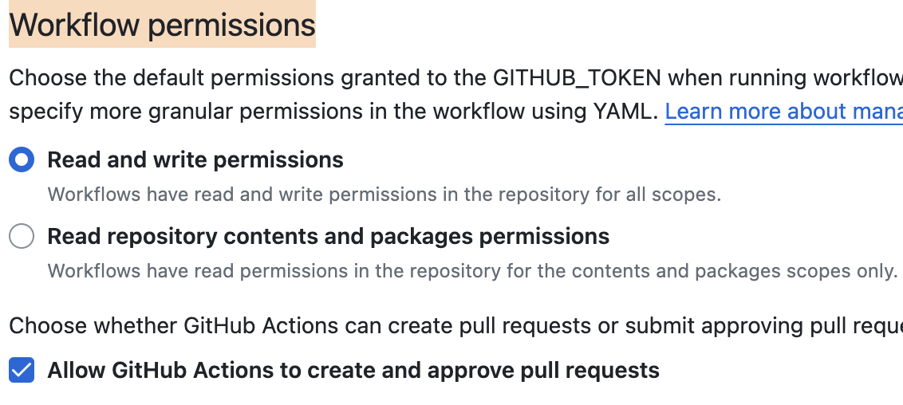

最近基于Hugo框架做了静态个人网站，使用github pages，搭配cloudflare免费版计划提供的一键CDN加速。一天之内完成了设计+开发+部署。也遇到了一些小问题，在此记录一下问题的具体情况以及解决的方法。
Hugo端的配置
相关文档已经很细致，安装和其他的一些细节不在此赘述。
-
首先，基于
ananke主题进行了小范围的修改，我的做法是将theme作为git的子模块（submodule），然后将theme目录下的布局目录（layout）复制到根目录下，然后在这里进行布局的修改，避免直接修改主题的源代码（因为直接修改主题的源代码会带来变动，在git树下会看到额外仓库的改动非常不舒服）。 -
其次添加一些自定义的css和字体，用到了预处理语言
sass(写起来会更舒服一点)，如何编译、处理（合并）sass文件并引入到博客里。
引入样式：
<!-- 这里的意思是 读取 /assets目录下的 子目录/css下的所有scss文件编译合并为custom.css，然后压缩印上指纹 -->
{{ $style := resources.Match "css/**.scss" | resources.Concat "custom.css" | toCSS | minify | fingerprint }}
<link rel="stylesheet" href="{{ $style.Permalink }}" integrity="{{ $style.Data.Integrity }}" media="screen">
使用自定义字体:
<style>
@font-face {
font-family: "GoodHood";
src: url("/font/GoodHood.otf");
}
</style>
如果需要引入js文件参考上述处理css文件的做法。
Github端的配置
首先增加一个workflow：/.github/workflows/flow.yml:
# Sample workflow for building and deploying a Hugo site to GitHub Pages
name: Deploy Hugo site to Pages
on:
push:
branches:
- main
workflow_dispatch:
permissions:
contents: read
pages: write
id-token: write
concurrency:
group: "pages"
cancel-in-progress: false
defaults:
run:
shell: bash
jobs:
# Build job
build:
runs-on: ubuntu-latest
env:
HUGO_VERSION: 0.115.1
steps:
- name: Install Hugo CLI
run: |
wget -O ${{ runner.temp }}/hugo.deb https://github.com/gohugoio/hugo/releases/download/v${HUGO_VERSION}/hugo_extended_${HUGO_VERSION}_linux-amd64.deb \
&& sudo dpkg -i ${{ runner.temp }}/hugo.deb
- name: Install Dart Sass
run: sudo snap install dart-sass
- name: Checkout
uses: actions/checkout@v3
with:
submodules: recursive
fetch-depth: 0
- name: Setup Pages
id: pages
uses: actions/configure-pages@v3
- name: Install Node.js dependencies
run: "[[ -f package-lock.json || -f npm-shrinkwrap.json ]] && npm ci || true"
- name: Build with Hugo
env:
# For maximum backward compatibility with Hugo modules
HUGO_ENVIRONMENT: production
HUGO_ENV: production
run: |
hugo \
--gc \
--minify \
--baseURL "${{ steps.pages.outputs.base_url }}/"
- name: Upload artifact
uses: actions/upload-pages-artifact@v1
with:
path: ./public
# Deployment job
deploy:
environment:
name: github-pages
url: ${{ steps.deployment.outputs.page_url }}
runs-on: ubuntu-latest
needs: build
steps:
- name: Deploy to GitHub Pages
id: deployment
uses: actions/deploy-pages@v2
这样每次提交代码就能看到后续跟着一个action在执行了。
其次需要修改Workflow permissions,在路径settings/Actions/General下，设置为
这个配置：

然后等待构建完成，打开https://{username}.github.io/{registryname}/即可访问博客了。
配置自定义域名
我这里选择增加两个DNS记录：A记录和CNAME记录。比如我要设置的域名是：jebben.cn;我的github用户名是anderlaw。
- A:@:185.199.111.153(githubIP)
- CNAME:www.jebben.cn:anderlaw.github.io
增加完毕后，一般至少需要等待几个小时，所以弄完明天再来看看github page页面上的域名检查是否正常，通过了就表示设置成功了。
 Github pages, workflow
Github pages, workflow